DAP硬线连接
DAP 仿真器通过开发板预留的调试接口与芯片相连。该接口既支持 JTAG（20 针）模式，也支持 SWD 模式——SWD 仅需 SWIO、SWCLK 两根信号线，节省 IO 口资源。
下图为开发板 JTAG 20 针排座实物与调试接口原理图（TRST、TDI、TMS/SWDIO、TCK/SWCLK、TDO/SWO、RESET# 等信号经 10K 电阻上拉）：
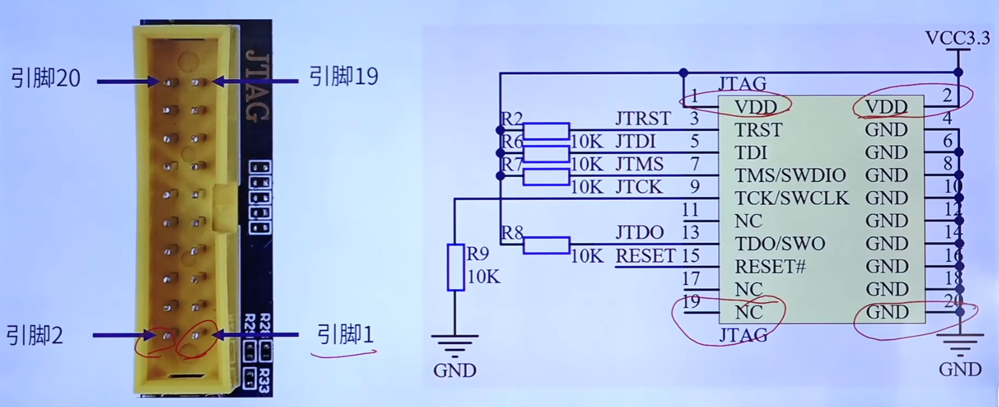
图1 开发板 JTAG 20 针排座实物与调试接口原理图，TRST、TDI、TMS、TCK、TDO 等信号均经 10K 电阻上拉。
JTAG 接口信号标注细节：
图2 JTAG 接口五根信号线：JTRST（复位）、JTDI（数据输入）、JTMS（模式选择）、JTCK（时钟）、JTDO（数据输出）。
SWD 信号标注细节（TMS/SWDIO、TCK/SWCLK）：
图3 SWD 模式下仅用两根线：TMS/SWDIO（串行数据输入/输出）、TCK/SWCLK（串行时钟），与 JTAG 引脚复用（排针 7、9、11 脚）。
正点原子 DAP 仿真器全套配件（仿真器、T 口 USB 线、20PIN 排线、XH2.54 4P 排线）：
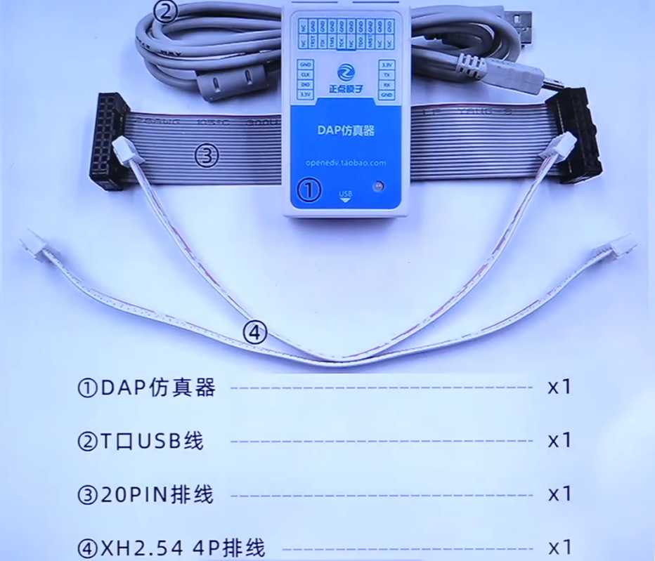
图4 正点原子 DAP 仿真器配件清单：DAP 仿真器、T 口 USB 线、20PIN 排线、XH2.54 4P 排线。
DAP 一端经 20P 排线接开发板，另一端 USB 接电脑，指示灯蓝色常亮为连接正常；开发板 BO、B1 用短路帽接 GND，上电后确保 PWR 电源灯常亮：
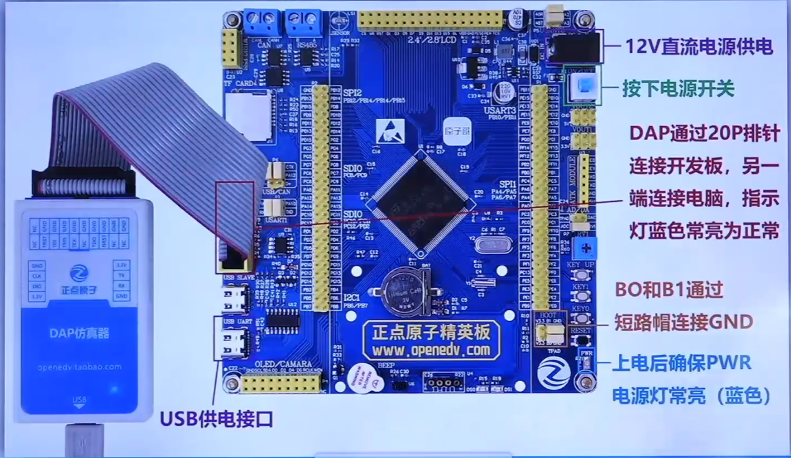
图5 连接示意：DAP 经 20P 排线接开发板调试口、USB 端接电脑；BO、B1 短路帽均接 GND（从主闪存启动），上电后 PWR 灯常亮。
MDK配置
2.1 刷写链接设置
Debug 选项卡选择 CMSIS-DAP Debugger；Settings 中 Port 选择 SW（仅占用两个 IO 口），Max Clock 设为 10MHz（实际约 4MHz，由 MDK 自动配置）；Utilities 选项卡勾选 Use Debug Driver：
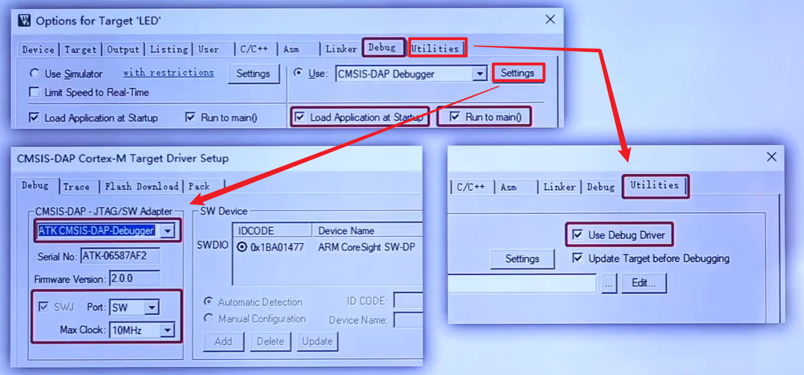
图6 Debug 选项卡 Settings 对话框：Port 选择 SW 后，右侧 SW Device 栏显示 IDCODE（0x1BA01477）即表示已识别到芯片；Max Clock 填 10MHz。
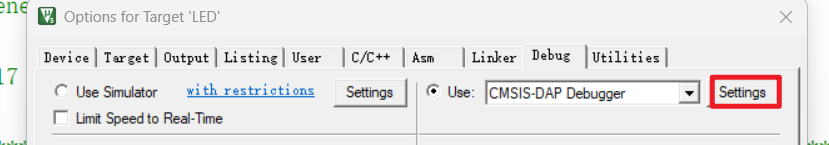
图7 Options for Target → Debug 选项卡：选择 CMSIS-DAP Debugger 后，点击红框中的 Settings 按钮进入上图设置界面。
2.2 刷写算法配置
Flash Download 选项卡中添加对应系列的编程算法，如 F1 大容量芯片选择 STM32F10x High-density Flash（512K，向下兼容小容量芯片）；擦除方式与 Program、Verify、Reset and Run 按需勾选；右上角 RAM for Algorithm 保持默认：
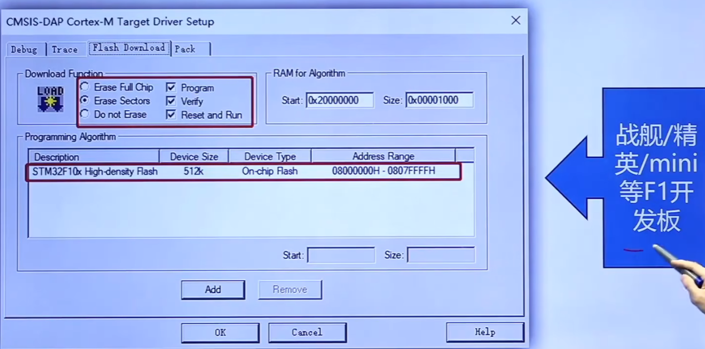
图8 Flash Download 选项卡：已添加 STM32F10x High-density Flash 编程算法（512K），RAM for Algorithm 保持默认（0x20000000 / 0x1000）。
2.3 下载
配置完成后，点击工具栏 LOAD 按钮即可将程序刷写到芯片：
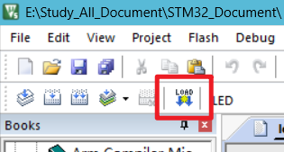
图9 工具栏 LOAD 按钮：点击后开始烧写，下方 Build Output 窗口显示 Erase、Program、Verify、Flash Load finished 等进度信息。
DAP调式
3.1 调试原理
推荐使用 SWD 接口调试：相比 JTAG 可节省 IO 口——F1 系列通过配置 AFIO_MAPR 寄存器，可释放 JTAG 占用的三个 IO 口。下图为调试原理相关图示：
图10 Cortex-M 内核含硬件调试模块：可在取指（指令断点）或访问数据（数据断点）时停止；内核停止时可查询内部/外部状态，查询完成后恢复执行。
图11 芯片内部结构手绘示意：调试模块经调试端口访问内核与存储器区域。
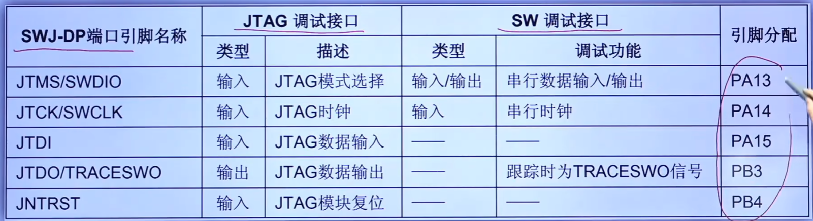
图12 SWJ-DP 端口引脚表：JTMS/SWDIO=PA13、JTCK/SWCLK=PA14、JTDI=PA15、JTDO/TRACESWO=PB3、JNTRST=PB4——JTAG 与 SWD 复用同一组引脚。
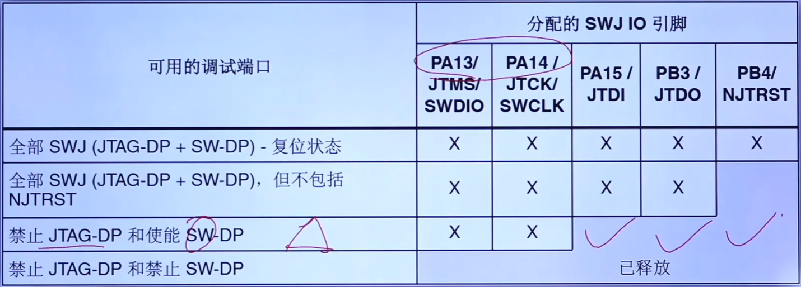
图13 调试端口与 SWJ IO 引脚分配：选择"禁止 JTAG-DP 和使能 SW-DP"后，PA15、PB3、PB4 三个引脚即被释放为普通 IO。
图14 F1 系列通过 AFIO_MAPR 寄存器的 SWJ_CFG[2:0] 位释放 SWJ-DP 引脚；F4/F7/H7 系列默认全部为复用功能 AF0。
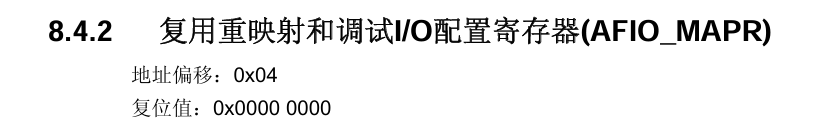
图15 参考手册 8.4.2 节：复用重映射和调试 I/O 配置寄存器（AFIO_MAPR），地址偏移 0x04，复位值 0x0000 0000。
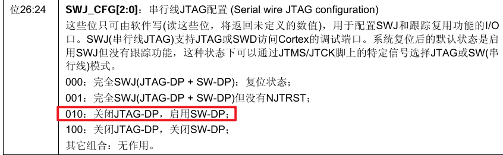
图16 SWJ_CFG[2:0] 位定义：010＝关闭 JTAG-DP、启用 SW-DP（SWD 调试常用）；复位后默认 000（完全 SWJ）。
3.2 调试操作
3.2.1 基础按钮
调试工具栏常用按钮（复位、全速运行、停止、单步等）、全局变量查看、仿真窗口与断点的快速设置：
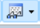
图17 调试工具栏中的窗口按钮（带下拉箭头，用于快速打开各调试窗口）。
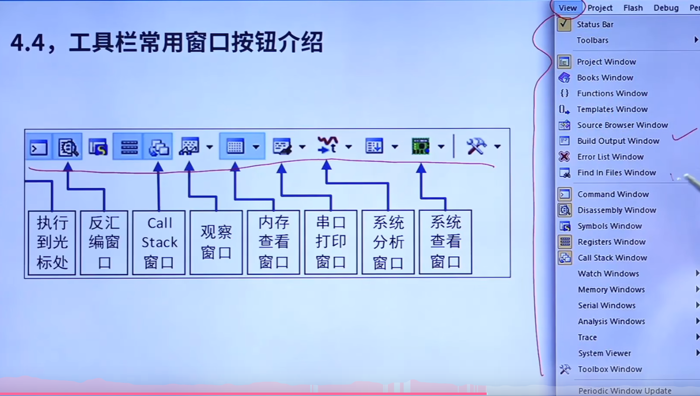
图18 工具栏常用窗口按钮：执行到光标处、反汇编窗口、Call Stack 窗口、观察窗口、内存查看窗口、串口打印窗口、系统分析窗口、系统查看窗口，均可通过 View 菜单开启。
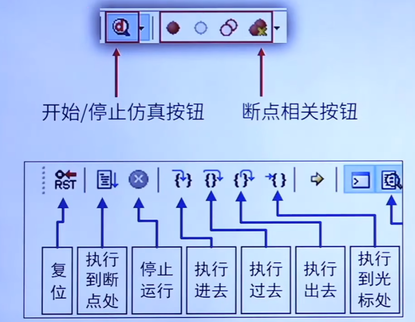
图19 上排为开始/停止仿真按钮与断点相关按钮；下排依次为：复位、执行到断点处、停止运行、执行进去、执行过去、执行出去、执行到光标处。
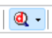
图20 开始/停止仿真按钮特写（d 图标）：点击进入调试状态，再次点击退出。
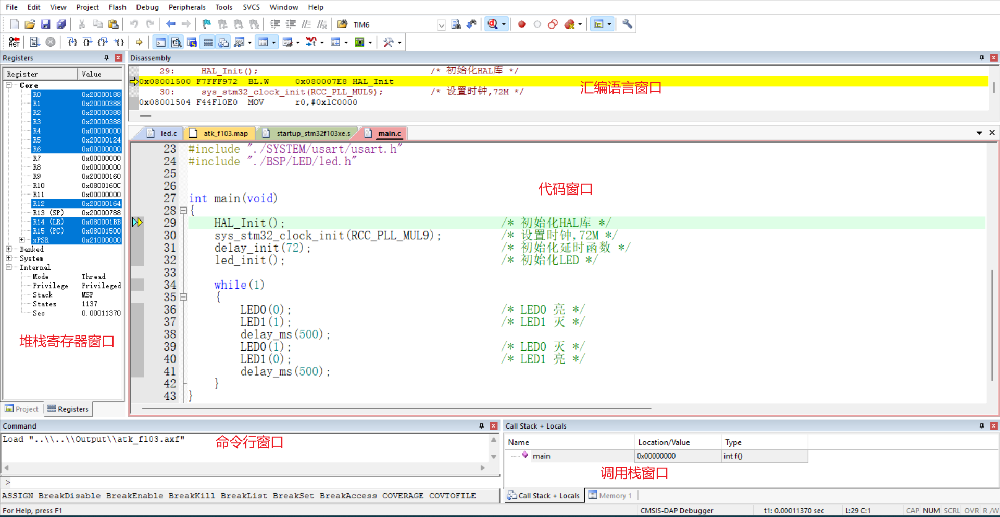
图21 调试界面全貌：左侧寄存器窗口、上方反汇编（汇编语言）窗口、中间代码窗口、下方命令行窗口与调用栈窗口。
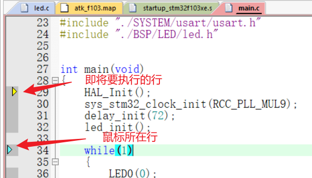
图22 代码窗口左侧箭头：黄色箭头指向即将要执行的行，蓝色箭头指向鼠标所在行。
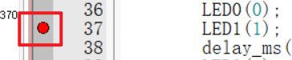
图23 行号旁出现红色圆点表示该行已设置断点。
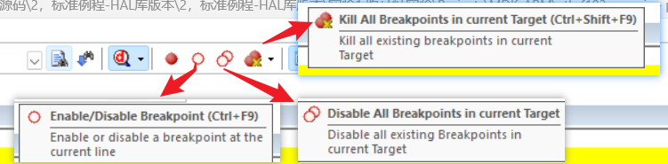
图24 断点按钮提示：Enable/Disable Breakpoint（Ctrl+F9）切换当前行断点；Kill All Breakpoints（Ctrl+Shift+F9）清除全部断点；Disable All 暂时禁用全部断点。
3.2.2 查看程序执行时间
通过 MDK 相关配置查看程序执行时间：
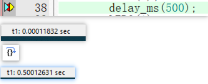
图25 代码行下方显示执行时间 t1：delay_ms(500) 执行前后由 0.00011832 sec 变为 0.50012631 sec，即该行耗时约 500ms。
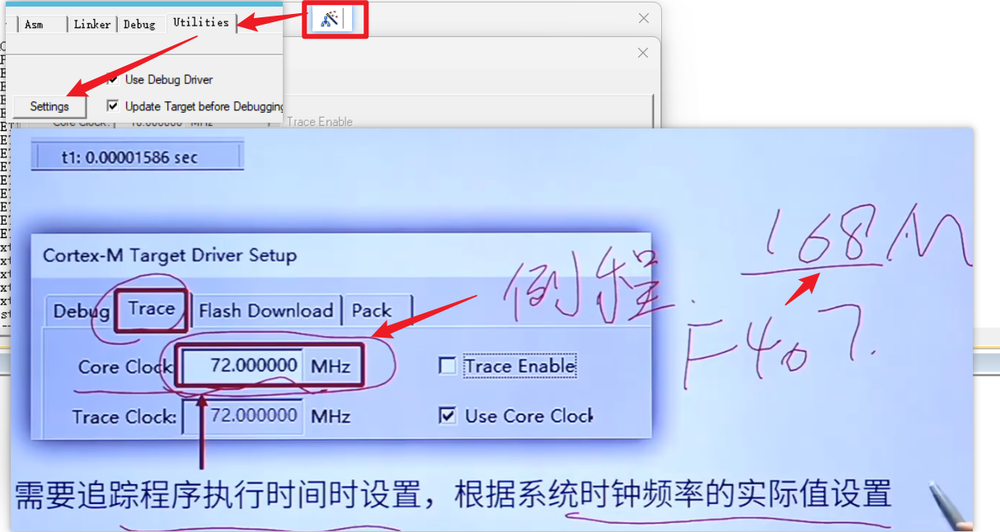
图26 需要追踪执行时间时，在 Utilities → Settings → Trace 选项卡中将 Core Clock 设为系统实际时钟频率（图中 72MHz；若主频 168M 则填 168M 倒推）。
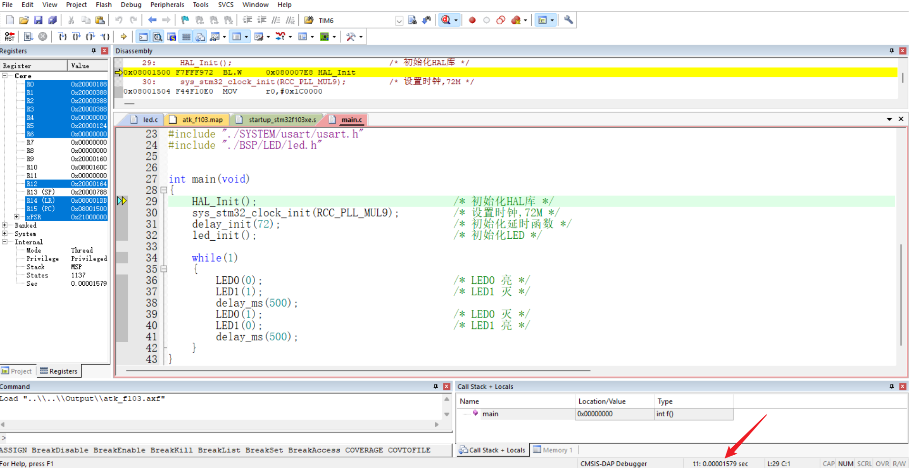
图27 调试状态下也可从底部状态栏直接查看 t1 执行时间（图中 0.00001575 sec）。
3.2.3 Watch 窗口自动设置断点

图28 观察窗口（Watch Windows）按钮图标：用于打开 Watch1 / Watch2 等变量观察窗口。
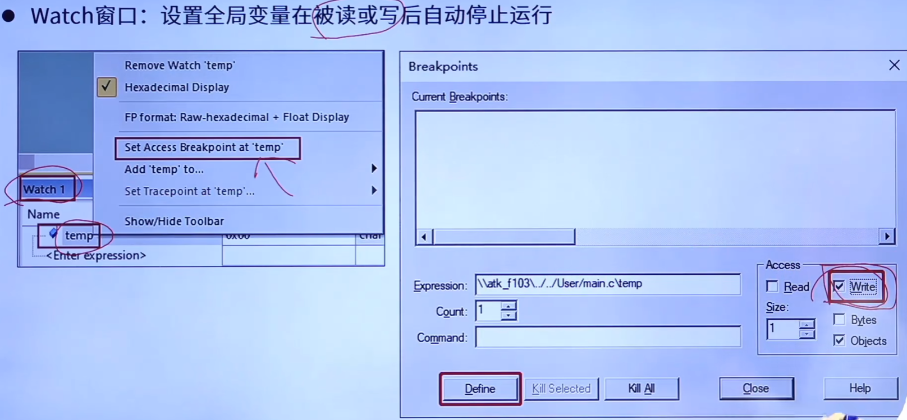
图29 Watch 窗口设置变量访问断点：右键变量 temp → Set Access Breakpoint at 'temp'，在 Breakpoints 对话框勾选 Write（被写入时停止），点击 Define 生效。
3.2.4 Memory 窗口查看内存
注意小端存储：
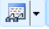
图30 内存查看窗口（Memory Windows）按钮图标：用于打开 Memory1 / Memory2 等内存窗口。
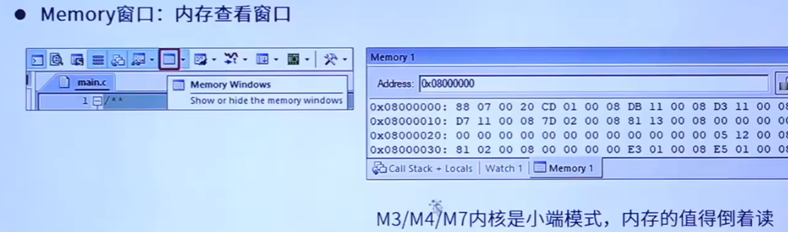
图31 Memory 窗口在 Address 栏输入地址（如 0x08000000）即可查看内存；M3/M4/M7 内核为小端模式，内存的值要倒着读。
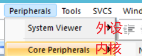
图32 Peripherals 菜单：System Viewer 查看片上外设寄存器，Core Peripherals 查看内核寄存器。
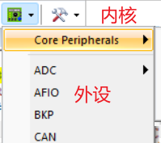
图33 调试工具栏外设寄存器按钮下拉：Core Peripherals（内核）以及 ADC、AFIO、BKP、CAN 等外设选项。
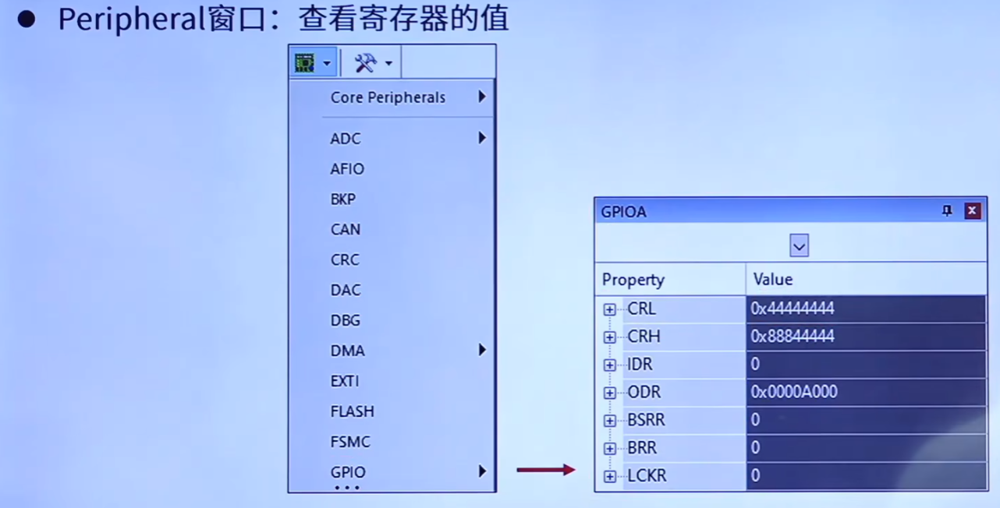
图34 Peripheral 窗口查看外设寄存器当前值：如 GPIOA 的 CRL（0x44444444）、CRH、IDR、ODR（0x0000A000）等。
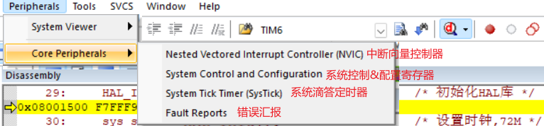
图35 System Viewer 子菜单：NVIC 中断向量控制器、系统控制及配置寄存器、SysTick 系统滴答定时器、Fault Reports 错误汇报。
3.2.5 编译错误窗口
图36 在 Build Output 窗口中双击 error/warning 行，可直接定位到问题代码所在位置。
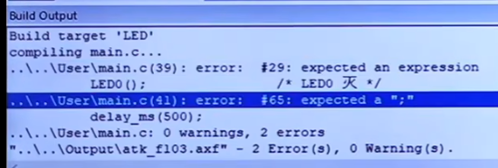
图37 编译错误示例：main.c 第 35 行 #29 expected an expression、第 41 行 #65 expected a ";"，底部汇总 0 warning(s)、2 error(s)。
3.2.6 MDK 基础设置
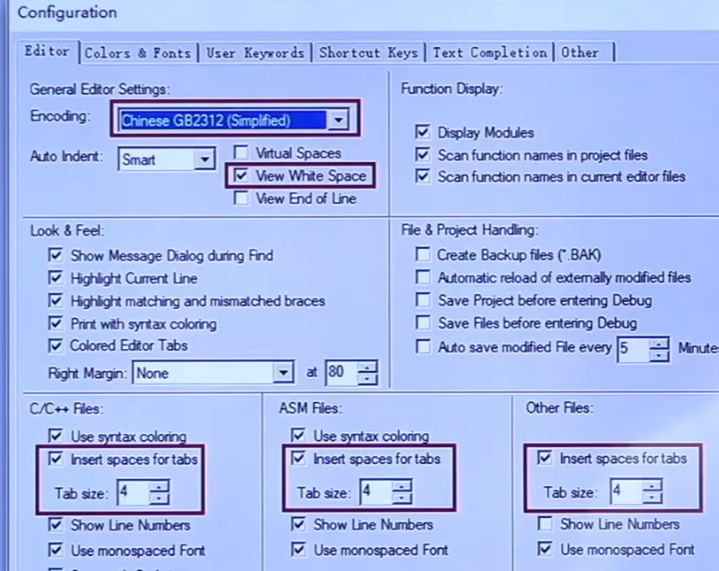
图38 MDK 基础设置（Configuration → Editor）：编码设为 Chinese GB2312 (Simplified) 防止中文乱码；C/C++、ASM、Other 文件均勾选 Insert spaces for tabs 且 Tab size 为 4。
3.3 调试注意事项
优化等级未合理设置时，变量观察窗口可能无法正常显示变量；断点设置需注意通信场景（如主从机通信，避免停留在通信关键段）：
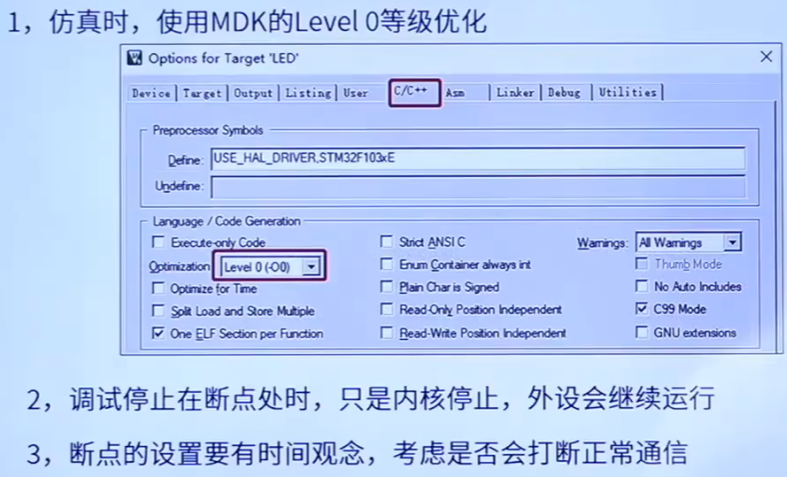
图39 调试注意事项：① 仿真时使用 Level 0 (-O0) 优化等级（C/C++ 选项卡）；② 停在断点处只是内核停止，外设会继续运行；③ 断点设置要有时间观念，避免打断正常通信。
图40 观察窗口显示 <not in scope>：变量超出作用域（如所在函数尚未执行到），此时无法观察其值。